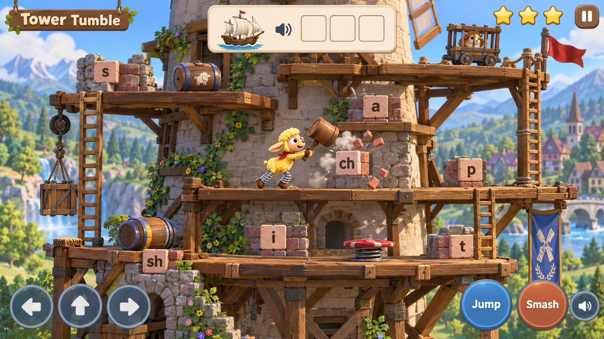

Image mockup. Game controls are illustrated.
The buttons here switch design review states.
The buttons here switch design review states.
The learning lives in the action
What makes it Arcade
Controls & recovery
Different from the current games
Arcade · Move, aim and build while you learn.
A physical game with continuous play, player control and reasons to replay. Tower Tumble, Rally Pals and Burrow Builders join this group.
Phonics games · Listen, look and practise.
The learning task is the main activity. Drum Trail and Lantern Lagoon belong here in the proposed menu, alongside the direct practice games.